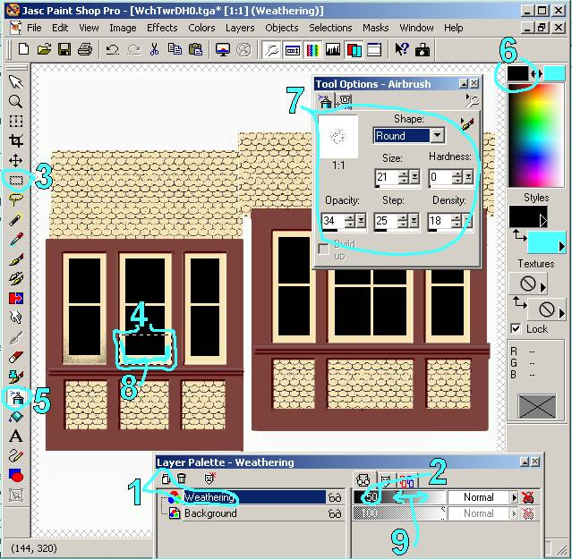

Weathering Techniques For MSTS: A Primer
by Wayne Campbell
Overview
I was recently asked for some help with weathering techniques and I developed a quick tutorial on some of my methods. This is pretty standard stuff for the old-timers here, but I thought I would share these methods for those new to using PSP7 layers. Please feel free to add your own comments and techniques.

- A new layer for the weathering. This way it is easy to erase or remove the weathering without affecting your model.
- Set the new weathering layer to 50% transparency. Later you will be able to use this slider to increase or decrease the amount of weathering as desired.
- Get your selection tool.
- Select the area to be weathered. In this case, I am weathering the window frame. I prefer to weather specific shapes on theobject separately, rather than washing the model with dirt. That way it is easier to collect more dirt into corners and crevices etc.
- Get the spray paint tool.
- Choose a black color. I almost always use black, not gray. We will use the transparency slider ( step 2 ) to lighten the weathering if necessary.
- Here is some air brush settings that work well for me.
- Airbrush the area to be weathered; be sure to get more into the inside corners and crevices.
- When you are done, use the transparency adjustment to select light or heavy weathering.
Now save your file. I save the file in two formats. First, I save it as a Paintshop PSP file. This file type retains the layer structure so I can come back later and make changes to the weathering. When I am ready to try the texture on the model, I save a second copy as a BMP or TGA as needed.
BTW, I use a similar technique to add shadow lines. Create a layer called shadows. And place a black line under each overhanging surface like window sills etc. Now you can adjust the transluceny slider for the shadows to increase or decrease the 3D effect. It will make your 3D detail 'pop'.
Notes: keep an eye on your layer control panel. Make sure the correct layer is selected, ie don't accidentally put weathering on your main layer, or model detail on your weathering layer etc. It is an easy mistake and can get quite frustrating.
I hope this helps.